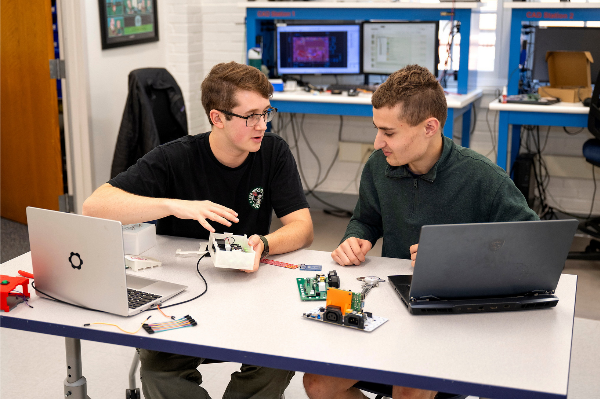
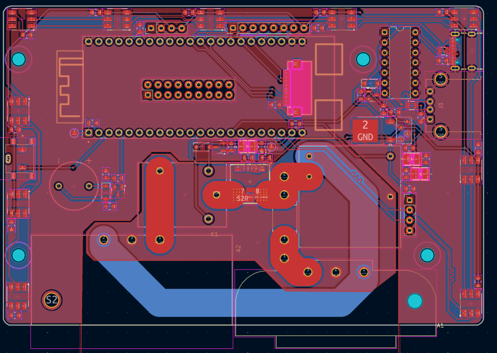
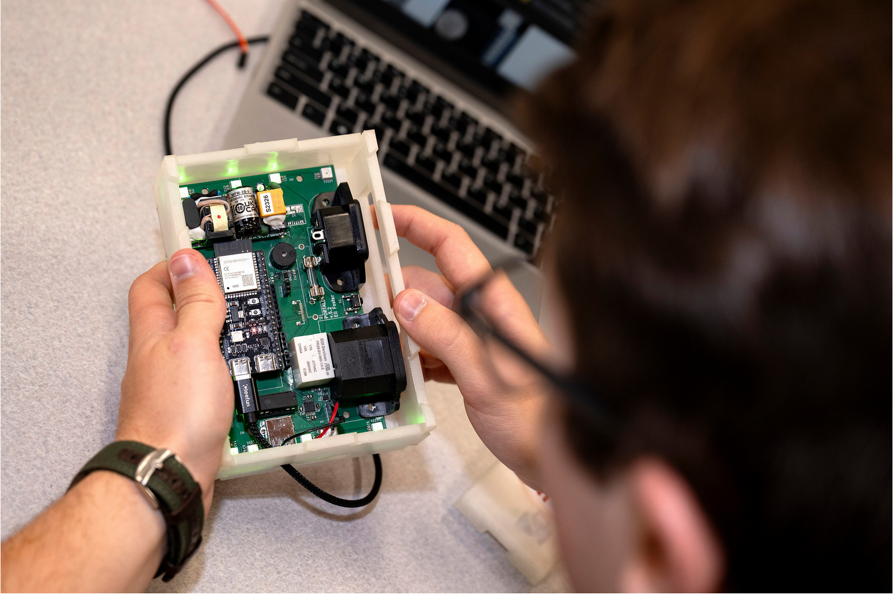
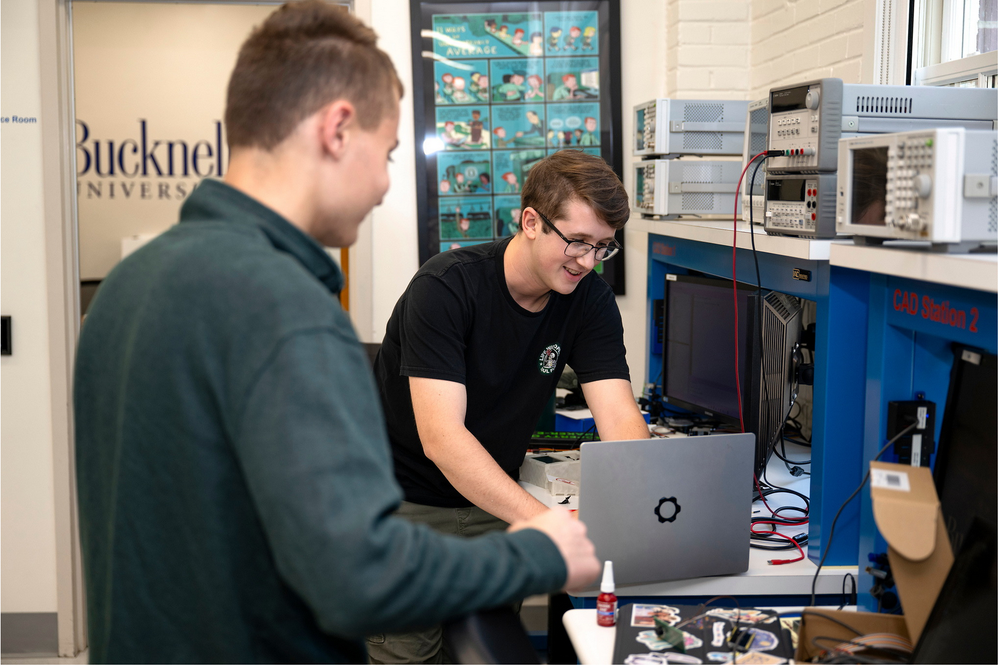
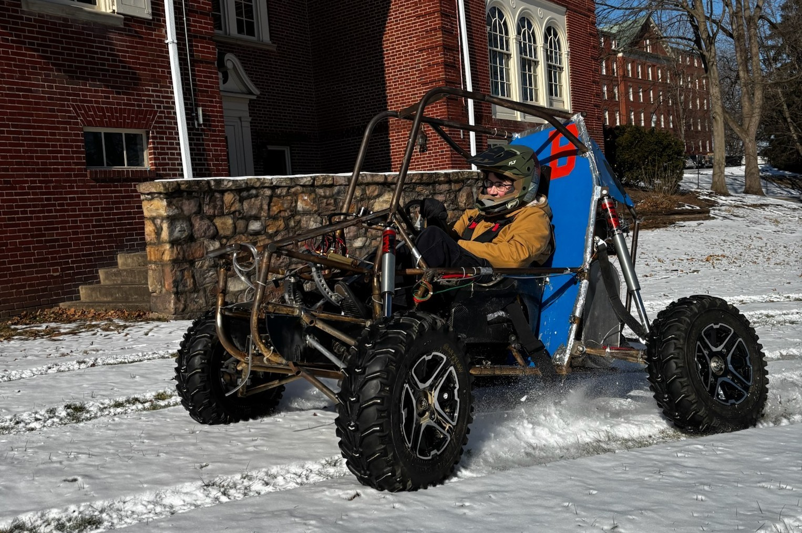
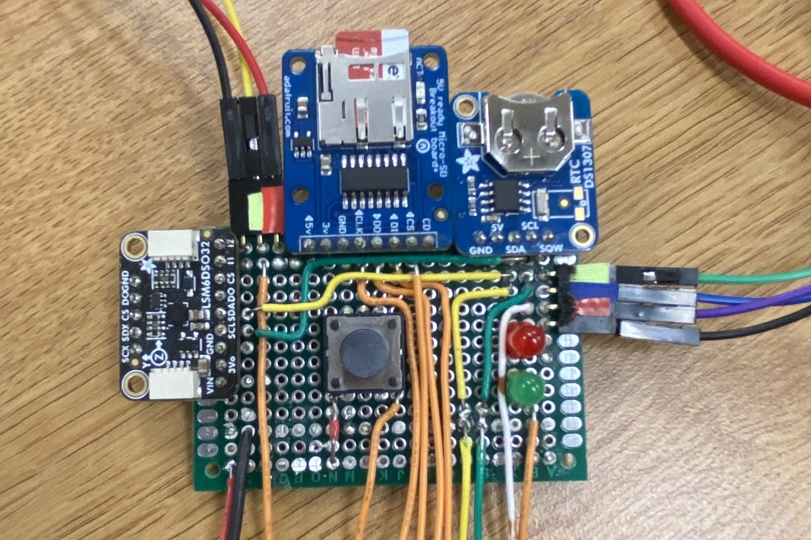
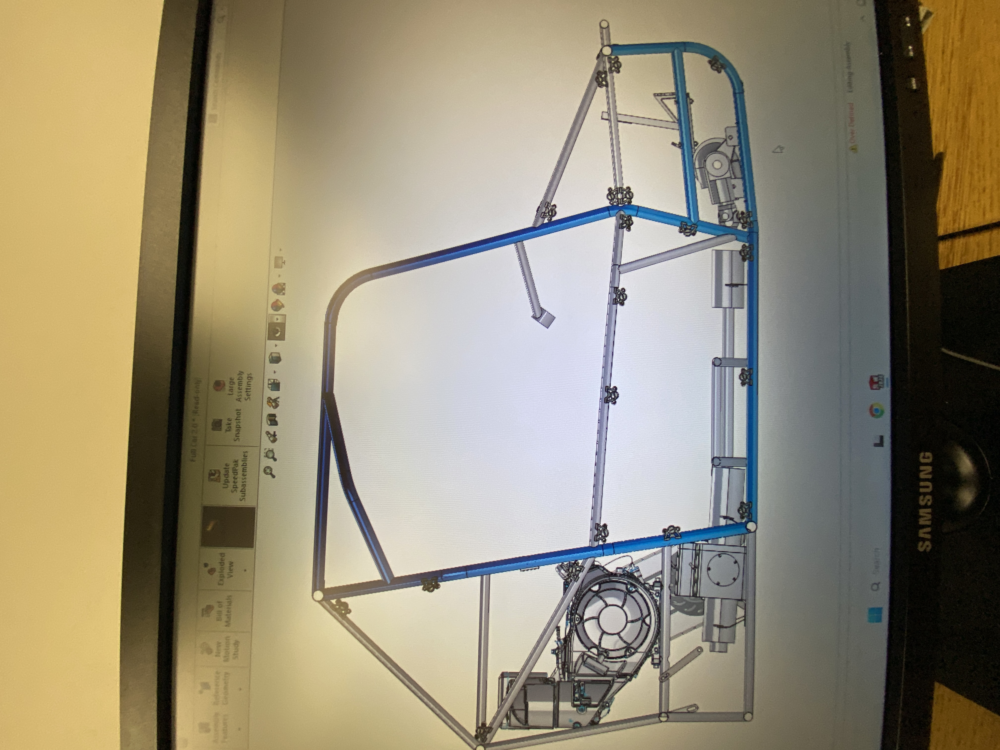

ECEG431- nand2tetris
ECEG 431, or Computer Systems, at Bucknell is a class based on the popularized online project known as nand2tetris. It involves writing and describing an entire computer architecture piece by piece, to give an overview of each step and what they may look like. It does so by having students create logic gates from a simplified hardware description language, move to assembly and writing assemblers, all the way up to high-level, Java-like languages made for whatever implementation one desires.
One of our projects was assigned to create some sort of interactable program in the Java-like language to help our understanding before writing a compiler for said language. My partner and I decided to recreate a simple version of Dig Dug! You can learn more about that project in my GitHub repo.
This class really fleshed out my programming skills and helped me acclimate to accepting new languages. Over the course of the class I had to quickly adapt to new languages, from variants of languages I already knew like Assembly, to Jack, their simple variant of Java, a language I’ve never touched. Going through these products significantly built up my skills of adapting to new languages quickly as well as improving those I was familiar with, like Python or HDL. I used Python to write an assembler, VM translator, and compiler. This effectively means I could write a program in Jack, translate it to VM code by their specification, translate that to dumbed-down assembly, and translate that into machine language that is able to run in a virtual machine we created from logic gates in HDL. Going through the process bottom-to-top significantly enhanced my understanding of how larger VLSI systems employ the same ideas and can be understood using the same properties and techniques.


Biosensor Research
During fall of 2025 I had the exciting opportunity to work with one of our professors, Amal Kabalan, on her research in biosensor production. Her team of researchers is identifying biomarkers in samples and had created a test apparatus they wanted to produce as an integrated circuit for further research use utilizing electrodes to stimulate samples placed into the IC. They reached out to me to contract some CAD work as they were unfamiliar with the program necessary, KLayout. KLayout is used for the creation of .gds, aka GDSII file formats, which are used to mask layers of silicon or similar substrate materials for IC production later on. This venture into VLSI and IC design is super exciting for me, as it’s something not really ever covered by my university or offered as a concentration or course of study. This opportunity to join Professor Kabalan in designing an IC for production was therefore very exciting and one I eagerly jumped at. While this component is extremely simple and was designed fairly quickly, it’s an important step towards more complex design, even dipping into the VLSI range, despite this being simply integrated design, not very-large-scale integrated design. Designing for her allowed me to not only familiarize myself with KLayout, but gain experience in precise design for applications with tight tolerances, learn about VLSI-specific design, and assist in creation of a product that will hopefully assist their research team for several years to come. I hope to continue in my learning and venture further into VLSI and IC design!

PortalBox
The Portalbox is an open-source makerspace management project. It originated at Bucknell University and intends to spread worldwide, allowing makerspaces to control their equipment and their users as they see fit. The Portalbox focuses on using interlocks to control power to equipment, such as 3D printers or laser cutters, based on the RFID cards that each student possesses. I had the honor to work on v5 of the Portalbox over the summer of 2025.
Our team consisted of myself, Aiden Cherniske, a Computer Engineering major in the Class of 2027, and our makerspace director Matt Lamparter (mlampart@bucknell.edu) overseeing. Some of our goals for our new version of the Portalbox included shrinking the physical footprint, saving cost on manufacturing each box, changing components for clarity and ease of use, and overall making the Portalbox more complete and consistent as a product. We accomplished all of these goals, shrinking the board area by roughly 50%, switching several components to save on manufacturing cost and increase component reliability, and creating a cleaner case and UI for users to interact with. The Finite State Machine running the Portalbox was also significantly improved by our resident coder, and rethought to allow for more hardware options and reduce processing time.
Part of my work on this project included completely redesigning the schematic and PCB for the Portalbox, taking what the Senior Design team before us left and updating components for reliability and cost. I was able to create a more efficient layout that only required 12cm by 8cm of board space, significantly shrinking the layout compared to previous iterations. I also created a new modular case design that allows for both laser-cut or 3D printed components. This allows as many makerspaces as possible to be able to produce cases in-house, significantly easing the requirements to create a Portalbox. It also allows others to design and test their own case components, in the spirit of the open-source nature of the project. All KiCad and SOLIDWORKS files are available on our public GitHub repo.
The time I spent (and continue to spend) on the Portalbox have greatly improved my skills and interest in the Embedded Hardware field~ I interacted with several new-to-me technologies and significantly improved my intuition and skills in circuit design. Creating more than six revisions of the board allowed me to fully understand the board’s behavior, as well as debug and improve my layout and routing in between each production. We ended up producing and populating three of our revisions before reaching a production model.
I’m so thankful for my time working on the project, and am looking forward to seeing the project evolve and grow in the future!




Bucknell Baja
SAE Baja is a national competition by the Society of Automotive Engineers. It’s the sister competition of Formula Student: Baja is based off of the rally that occurs in Baja, California. Teams of students from universities across the US compete to design and manufacture the most capable off-road race vehicle they can within certain guidelines.
While this competition mainly attracts mechanical engineers, there are some electronics on the car that warrant a subsection of the team focused on ECE subjects. During the 2024-25 academic year, I led a group of ~10 Electrical or Computer Engineers in order to create a robust system on the Bucknell Baja car: these include a datalogger, controls for electronic differentials, and a wiring harness responsible for engine management and killswitches. Part of my role on this team was delegating tasks to those on our subteam, while contributing significantly to our products myself.
The perfboard that can be seen in the images is a hand-soldered datalogger that acts as a backpack on an Arduino Mega 32u4. It records position, accelerometer and gyroscopic data, and timing information onto an SD card in a .csv format for later use. The PCB is a differential control board that utilizes an ATMEGA32u4 and a half-bridge IC in order to take in data from differential outputs as well as driver control switches, and select the proper drive mode. The electronic differentials use a proprietary Yamaha connector that controls the internal servo, which interacts with a rack-and-pinion to select the drive mode. We control this with the half-bridge in order to change drive mode and use its built-in continuity outputs to feed information into the board. I was the lead on both of these products, ending up designing the board on my own and soldering the datalogger.
This year in Bucknell Baja we plan to employ an ECE senior design team to take over one of these products, while our subteam continues the others. Our plans include turning the perfboard datalogger into a PCB, and creating another revision of the differential board and producing it.


